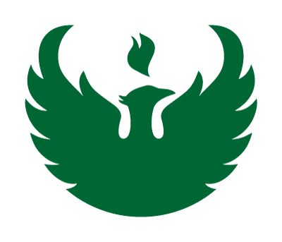

<!--This element is a bit whacky in that I never got the neon animated pages to work for
    the resume detail item. So I just have to set the height of the resume detail items to
    the largest of the group of them. A small inconvience and non maintainable, but it will
    do for the time being.-->

<link rel="import" href="../../bower_components/polymer/polymer.html">

<dom-module id="resume-content">
     <template>
         <style is="custom-style">
            :host {
                display: block;
                height:100%;
            }
            .mainHeader {
                font-size: 3em;
                margin-top: 10px;
                margin-bottom: 10px;
                margin-left: 2%;
            }
            .header{
                font-size:2em;
                margin-top:10px;
                margin-bottom:10px;
            }
            .padding-left{
                padding:1%;
            }
            #rippleCont {
                 height: 100%;
                 overflow: hidden;
            }
            #pages {
                height:100%;
            }
            #resCont {
                width: 100%;
                height: 100%;
            }
            hr {
                width: 100%;
                border-color: #FFB59A;
            }
            #downloadIconTag {
                visibility: hidden;
                opacity: 0;
                transition: visibility 0s linear 0.5s, opacity 0.5s linear;
                border: 1px black solid;
                border-radius: 5px;
                margin-left: auto;
                margin-top: -5px;
                padding:2px;
            }

            #downloadIcon:hover + paper-material {
                visibility: visible;
                opacity: 1;
                transition-delay: 0s;
            }
            
            .extra-circ-card{
                min-height: 300px;
                min-width: 300px;
               
                max-width: 500px;
                --paper-card-header-text:{
                    background: rgba(255, 255, 255, 0.5);
                    border-radius: 0px 15px 0px 0px;
                    border-top: 3px solid black;
                    border-right: 3px solid black;
                }
                
            }
            
            #extra-circ-content{
                @apply(--layout-horizontal);
                @apply(--layout-center-justified);
            }
            #edu-content{
                 @apply(--layout-horizontal);
            }
            
            /*If screen is less than 600px lets change the look*/
            @media only screen and (max-width: 925px){
                #extra-circ-content {
                    @apply(--layout-vertical);
                }
                #edu-content{
                    @apply(--layout-vertical);
                }
            }
             
        </style>

        <!--Import the data for the detail pages from a JSON file-->
         <iron-ajax auto url="../data/resumeData.json" handle-as="json" last-response="{{resumeData}}"></iron-ajax>

        <div id="resCont">
            <!--Header-->
            <div class="vertical layout">
                <div class="horizontal layout">
                    <p class="mainHeader flex">Resume</p>
                    <div class="flex vertical layout">
                        
                            <paper-icon-button type="submit" id="downloadIcon"
                                               style="margin-left:auto;"
                                               icon="icons:file-download"
                                               on-click="downloadResume">
                            </paper-icon-button>
                        
                        <paper-material elevation="0" id="downloadIconTag">Download Resume</paper-material>
                    </div>
                </div>
            </div> 
            
            
            
            <!--Objective-->
            <collapsible-header header-text="Objective">
                <div id="objectiveCont" style="position:relative;" class="vertical layout flex">
                    <div class="horizontal layout">
                        <div class="flex">
                            <p class="padding-left">
                                Driven and dedicated, I am a computer science graduate seeking to contribute to a small-medium sized company and 
                                help them make lasting impacts. I am mostly interested in front-end and mobile development, but I am always open to other positions.
                            </p>
                        </div>
                        <div style="margin-left:auto; padding-right: 5px;">
                            <iron-image style="height:100px; width:100px; " sizing="contain" src="../images/objective.png"></iron-image>
                        </div>
                    </div>
                </div>
            </collapsible-header>
            <!--End Objective-->
            
            <!--Education-->
            <collapsible-header header-text="Education">
                <div id="edu-content">
                    <div class="flex padding-left">
                        <h1>University of Wisconsin - Green Bay</h1>
                        <p style="padding-left: 2em;">Bachelor of Science: Computer Science</p>
                        <p style="padding-left: 2em;">Minor: Philosophy</p>
                        <p style="padding-left: 2em;">GPA: 3.88</p>
                    </div>
                    
                    <div class="end-justified" style="text-align:center;">
                        </img>
                    </div>
                </div>
            </collapsible-header>
            <!--End Education-->
            

            <!--Experience-->
            <collapsible-header id="expColHeader" header-text="Experience" on-click="playEmployAnima">
                <!--Employment Items-->
                <div id="rippleCont">
                    <neon-animated-pages id="pages" selected="[[selectedNeonPage]]">

                        <resume-item-container id="resumeItemCont" on-tile-click="tileClick">
                        </resume-item-container>

                        <template is="dom-repeat" items="{{resumeData.items}}">
                            <resume-detail-item id="test" on-back-click="backClick"
                                                job-name="{{item.jobName}}"
                                                position="{{item.position}}"
                                                duration="{{item.duration}}"
                                                location="{{item.location}}"
                                                descr="{{item.descr}}"
                                                experience="{{item.experience}}"
                                                color-fixed="{{item.color}}"
                                                logo="{{item.logo}}"
                                                logo-link="{{item.logoLink}}">
                            </resume-detail-item>
                        </template>

                    </neon-animated-pages>
                </div>
            </collapsible-header>
            <!--END (OF) :) Employment-->
            
            

            <!--Technical Skills-->
            <collapsible-header id="skillColHead" header-text="Technical Skills" on-click="playSkillAnima">
                <div class="vertical layout">
                    <skills-section id="skillsSection"></skills-section>
                </div>
            </collapsible-header>
            <!--End Technical Skills-->

            
            
            <!--Extra Curricular-->
            <collapsible-header header-text="Extra Curricular">
                <!--Outside School-->
                <h1 class="padding-left">Outside School</h1>
                <div id="extra-circ-content">
                    <!--UWGB - Pep Band-->
                    <paper-card class="extra-circ-card" style="margin: 2em;" heading="UW-GB Pep Band" image="build/images/pep-band.jpg">
                        <div class="card-content">
                            <h3>Percussion Leader</h3>
                            <p>I had the privilege of being a lead drummer all 4 years at UW-Green Bay. As a pep band, we played at all men's and
                                women's basketball games. Even got to do some traveling to Louisiana and D.C. for March Madness!</p>
                        </div>
                    </paper-card>
                    <!--End UWGB - Community Service-->
                    <!--UWGB - Community Service-->
                    <paper-card class="extra-circ-card" style="margin: 2em;" heading="Intramurals" image="build/images/intramurals.jpg">
                        <div class="card-content">
                            <h3>Intramurals Captain</h3>
                            <p>I played intramural sports all 4 years at UW-Green Bay. Activities included Flag Football, 
                                Volleyball, Badminton, Soccer, Handball, and much more!
                            </p>
                        </div>
                    </paper-card>
                    <!--End UWGB - Community Service-->
                </div>
                <!-- Volunteer -->
                <h1 class="padding-left">Volunteer</h1>
                <div id="extra-circ-content">
                    
                    <!--UWGB - Community Service-->
                    <paper-card class="extra-circ-card" style="margin: 2em;" heading="UW-GB Community Service" image="build/images/ywca.jpg">
                        <div class="card-content">
                            <h3>General Helper</h3>
                            <p>Aided YWCA - Green Bay with cleanup of outdoor area such as raking and picking up garbage. 
                                Additionally helped indoor teams clean rooms and sort through donated clothing.</p>
                        </div>
                    </paper-card>
                    <!--End UWGB - Community Service-->
                    <!--UWGB - Community Service-->
                    <paper-card class="extra-circ-card" style="margin: 2em;" heading="Back To School Store" image="build/images/back-to-school.jpg">
                        <div class="card-content">
                            <h3>Personal Shopper</h3>
                            <p>Volunteered as a Personal Shopper for Back To School Store in Green Bay, WI. Assited by taking children one-on-one 
                                through a shopping center to gather school essentials, get a check-up from the dentist, and grab some new clothes.</p>
                        </div>
                    </paper-card>
                    <!--End UWGB - Community Service-->
                </div>
                <!--End Volunteer-->
                
            </collapsible-header>
            <!--End Extra Ciricular-->
        </div>

         <!--Paper Toasts/Notifications-->
        <paper-toast id="resumeDownloadToast" text="Resume Download started..."></paper-toast>
</template>

    <script>
        Polymer({
            is: "resume-content",

            properties: {
                selectedNeonPage: {
                    type: Number,
                    value: 0
                }
            },

            tileClick: function (event) {
                //Set next neon page to animate to 
                this.selectedNeonPage = event.detail.openCard;

                //SET HEIGHT OF LARGEST RESUME PAGE HERE!
                this.$.pages.style.height = "750px";
                //this.$.pages.style.height = this.resumeContHght + "px";

                this.$.pages.scrollIntoView({ block: "start", behavior: "smooth" });
                
            },

            backClick: function (event) {
                //Animate back to neon page 0
                this.selectedNeonPage = 0;
                //Set height to 100% of content
                this.$.pages.style.height = "100%";

            },
            //This function acts as a download button for the resumeDownloadIcon
            downloadResume: function () {
                
                var link = document.createElement("a");
                link.download = "Resume";
                link.href = 'build/uploads/Resume_TimNortman_2016.pdf';
                link.click();
                this.$.resumeDownloadToast.open();
            },
            //Plays cascade animation of resumeContainer
            playEmployAnima:function()
            {
                //If we clicked on the header and it is opening , lets play the animation
                if (this.$.expColHeader.opened && (event.target.className.indexOf('collapsible-header')!==-1))
                    this.$.resumeItemCont.playEntryAnimation();
            },
            
            playSkillAnima:function(event)
            {
                //If we clicked on the header and it is opening , lets play the animation 
                if (this.$.skillColHead.opened && (event.target.className.indexOf('collapsible-header')!==-1))
                    this.$.skillsSection.playSkillItemsEntryAnimation();
            }
           
        });
    </script>

</dom-module>
	
	